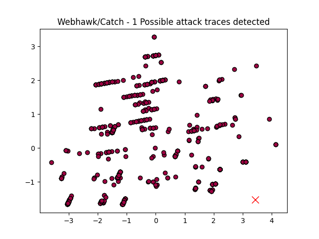

Webhawk Catch ReportUnsupervised learning Web logs/OS processes attack detection. Date: 08/06/25 at 07:51:30 GMTLog file: /Users/walid/Downloads/access.log.2020-09-29 Log type: apache logs Findings: 1 |
 |
| Severity | Related CVE(s) | Line# | LLM Insights | Log line |
| High | No CVE found | 582 | This log line appears to be a normal, legitimate login attempt, as it contains a standard HTTP request from a browser (Firefox) on a Windows machine, attempting to access the website's login page with valid parameters. No suspicious activity is indicated. | 39.101.1.61 - - [29/Sep/2020:19:15:20 -0700] "GET /index.php?m=admin&c=index&a=login&dosubmit=1 HTTP/1.1" 404 328 "-" "Mozilla/5.0 (Windows NT 10.0# WOW64# rv:48.0) Gecko/20100101 Firefox/48.0" |